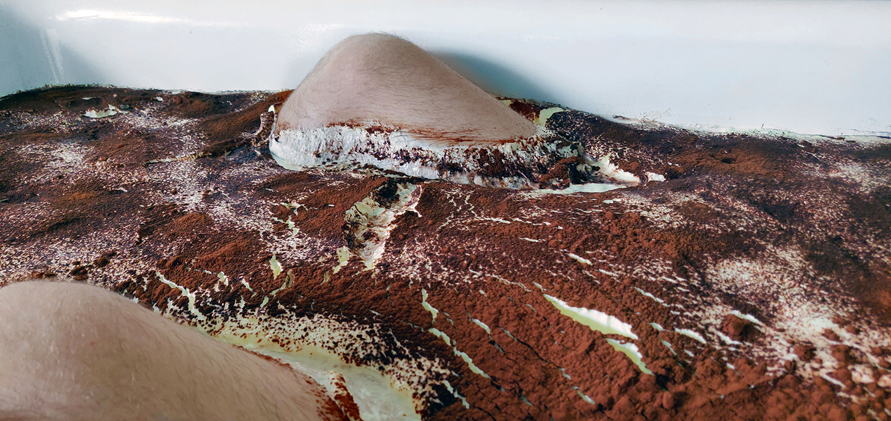

Lisa Holmgren
No More Rain on Your Pretty Face

Jag har oftast ingen plan när jag tecknar, och det är något flyktigt och impulsivt över hela processen. Litografin tillåter mig att stanna vid ett motiv. För mig har arbetet med litografin varit ett sätt att hitta tillbaka till mig själv i en konstnärlig historisk kontext, som visserligen ibland känns levande död, men som ändå på alla sätt fascinerar.
Jag pendlar mellan olika uttryck och former, på ett nästan ofrivilligt sätt. Under den här perioden, på Sockerbruket under oktober och november månad 2019, vill jag se Chihiros och Christinas projekt växa fram och bli en del av dem. Parallellt tecknar jag och binder böcker. Teckningarna kommer skildra mina egna personliga tolkningar och blanda erfarenheter, tankar, minnen och drömmar som åter blivit aktuella.
Art is a way to create space for meaning. It makes visible how I work, what makes me laugh and what makes me wonder. I use my own visual language to express myself as my surroundings continuously change. The story that is unfolding is always partly untold. I work intuitively and let ideas take on new forms. Forms, which surprise me, and inspire me to react. This interplay between thought and action enables a wordless dialogue between my intentions and expectations, and, suddenly, the finished work. The starting point is always drawing, because to me, it is the fastest way to reach the goal: to evoke and express an emotion.
Lisa Holmgren föddes i Göteborg 1985. Hennes intresse för konst och kultur förde henne till Berlin där hon studerade fri konst med inriktning måleri. Under studietiden experimenterade hon med olika uttryck, material och former. Hon tog sin masterexamen 2017 och har sedan dess intresserat för litografi. Numera arbetar hon på KKV i Göteborg.
Lisa Holmgrens´s Website